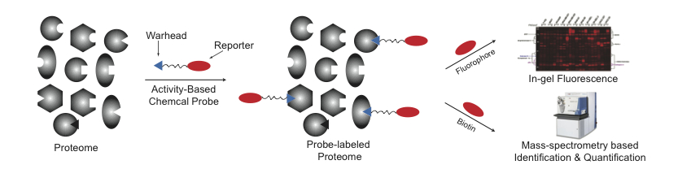
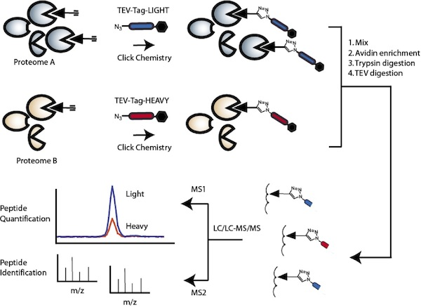
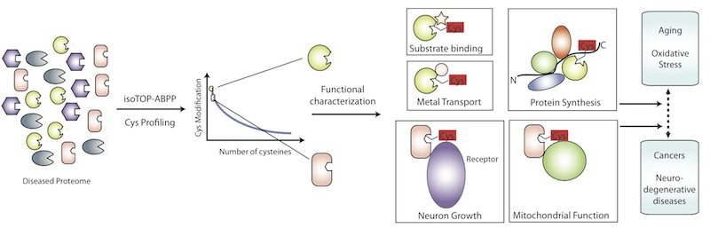

|
Our research programs focus on the development and application of multi-disciplinary tools in chemoproteomics,
biochemistry, bioinformatics and computational structure biology to 1) globally uncover novel funtional sites in
enzymes that are post-translationally regulated by endogenous reactive metabolites or targeted by drug
compounds; 2) interrogate the underlying molecular mechanisms by which these modifications regulate
protein function to perturb key cellular signaling pathways and 3) develop computational tools to predict, model and
design such protein-small molecule interactions. These studies have the great potential to provide penetrating
mechanistic insights into the molecular basis for numerous diseases functionally linked to metabolic disorder
as well as to integrate and streamline efforts in inhibitor discovery, drug design and the functional
annotation of uncharacterized enzymes in the post-genomic era.
Introduction: Activity-Based Protein Profiling (ABPP)
In the post-genome era, researchers are facing the grand challenge of annotating functions of thousands of
newly predicted gene products. While conventional proteomic technologies have enabled identification of large
number of proteins in parallel, their measurements are mostly based protein abundance but rather than protein
activity. To address such a limitation, a new chemical strategy named 'Activity-Based Protein Profiling (ABPP)'
was pioneered by Cravatt and colleagues which utilizes active site-directed small molecule-based chemical
probes to report the functional state of enzymes directly in whole proteomes (Figure 1). , An activity-based
probe normally contains two functional groups -- one is the reactive group and the other is the reporter
group. The reactive group allows the probe to target a subset of the proteomes based on shared principles of
binding and/or reactivity, and monitor their actual functional states (e.g., to label only active enzymes, but
not their inactive precursor or inhibitor-bound forms). The reporter group can be either a fluorophore
(e.g. rhodamine) to enable analysis by in-gel fluorescence or a biotin moiety that allows affinity-based
enrichment by streptavidin. The enriched proteins can then be digested and analyzed by mass
spectrometry-based shotgun proteomics for identification and quantification. A third option is to introduce
an alkyne group in the probe, which can be conjugated with a secondary azide-functionalized rhodamine or
biotin reporter tag via copper-catalyzed Huisgen-Sharpless cycloaddition ('click-chemistry').

Figure 1. Activity-based protein profiling (ABPP).
Over the past several years, ABPP technology has been advanced to not only qualitatively identify protein
targets, but also quantitatively compare the extent of probe labeling on specific residue sites. The approach,
referred as 'isotopic tandem orthogonal proteolysis (isoTOP)-ABPP' (Figure 2), utilizes a cysteine-reactive
iodoacetamide-alkyne (IA-alkyne) and a special azide-biotin tag containing a tobacco etch virus (TEV) protease
cleavable linker and an isotopically labeled valine, which allows accurate quantitation of the extent of
IA-alkyne labeling for 1000+ cysteine residues between two proteomes. This powerful quantitative
chemoproteomic technology was applied to uncover cysteine residues in proteomes that are of intrinsically high
reactivity or are sensitive to modification by endogenous small molecule metabolites generated from lipid
peroxidation, both of which have revealed many novel cysteine sites that are of potential functional
significance.

Figure 2. isotopic Tandem-Orthogonal Proteolysis Activity-based protein profiling (isoTOP-ABPP).
Apply isoTOP-ABPP to profile functional cysteines implicated in diseases.
Among 20 amino acids, cysteine is unique owing to its intrinsically high nucleophilicity. This feature endows
the power to cysteine to perform diversified functions in enzymes, such catalysis, metal binding and redox
regulation. Meanwhile, cysteine is also prone to oxidative modification and such modifications often result
in aberrant enzyme activity, which can in turn dramatically change intracellular signaling pathways, leading
to the pathogenesis of many diseases. We are interested in applying the isoTOP-ABPP platform, under different
disease models including caner, neurodegenerative diseases and atherosclerosis, to quantitatively profile
cysteine residues that undergo oxidative and/or post-translational modifications and then perform biochemical
and cell biological experiments to characterize their functional implications (Figure 3). These studies will provide new
insights at the molecular level on how abnormal protein functions contribute to disease progression as well as
unveil potential therapeutic targets for treatment.

Figure 3. Chemoproteomic Profiling and Functional characterization of cysteines implicated in various diseases
Advance ABPP technology to globally profile protein-ligand and protein-protein interactions.
In addition to cysteine, there are other amino acids in proteins that are intrinsically reactive and are able
to act as functional 'hot spots'. Examples include lysine, histidine, tyrosine and aspartic acid etc. We are
interested in developing new chemical probes specifically reactive towards these amino acids. With these
probes in hand, we shall be able to achieve more comprehensive coverage on functional residues in proteomes
and even more ambitiously, we hope to utilize such a suite of chemical probes to map any protein-ligand
interactions on a global scale in general. Within living cells, protein-protein interactions are equally, if
not more than, important as protein-small molecule interactions. Therefore, we are also planning to extend
ABPP technology to profile functional protein-protein interactions.
Model and Design protein-ligand and protein-protein interactions.
Chemoproteomic experiments can uncover many previously unknown protein-ligand and protein-protein
interactions. Equally exciting is to understand such interactions on a structural level and in turn manipulate
them to create novel, boost beneficial or disrupt deleterious interactions. As a member of RosettaCommons, our
lab is interested in developing and applying computational tools to model and design specific protein-ligand
and protein-protein interactions based on the knowledge obtained from mass spectrometry-based chemoproteomic
study. In particular, we will initially focus on covalent protein-small molecule interactions and plan to in
silico predict, screen and design potent and specific ligand inhibitors or activators towards key enzymes
involved in disease development.
For position inquiry, please contact Chu Wang (chuwang#pku.edu.cn) for more details.
|
|